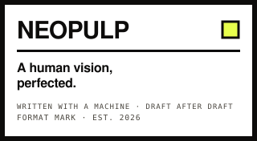
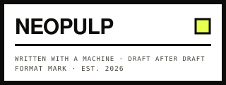

Neopulp is a mark. An author puts it on a book to tell readers how it was made: a person created, shaped and judged this, and a machine wrote it with them, draft after draft. Any author can use the mark for free. And any reader who sees it knows exactly what they're holding.
Before writing, ideas lived only in speech. Written down, an idea could travel without its thinker.
Before print, every copy was made by hand. The press made copies cheap and readers plentiful.
Before the internet, publishers decided what got published. The web let anyone reach readers directly.
Before the machine, trying an idea could cost years of effort. The machine removes the friction — and the book gets argued into existence.
We have the bug. We can't stop.
We don't make things because the market asked. We make things because making them is the point — because there is a premise stuck in our heads and it will not leave until it exists in the world. This was never about tools. It's about creativity.
For all of history, the creative economy selected for ideas worth the cost of making. Film cost stock and crews and sets. Books cost typesetting and print runs and capital. Every medium charged a price for trying the idea that probably wouldn't work, so most of those ideas were never tried. The strange book stayed a note in a drawer. Whole lives of unmade work died in the gap between imagining a thing and being able to afford to make it.
That price just collapsed. Now we select for ideas worth making. Not “Is it viable enough?” — “Is it interesting enough?” And when experimentation gets cheap, creativity becomes play again.
The machine can make us faster. That's almost beside the point. Sometimes it makes us slower — we go deeper, follow the stranger question, take the premise further than we would have dared alone. It's a pedal-assist bike: you still pedal, you just go farther, and down roads you couldn't have taken before. The interesting variable was never speed. It's where you go.
It is a medium, not a tool. A tool does what you point it at. A medium has depths — a field of possibility. Paint is a medium. Film is a medium. So is this. The camera didn't end painting; it started photography. The work is whatever you manage to create from it — and creating isn't one act. It's a conversation.
A neopulp book isn't dictated. It's argued into existence. Human and machine, draft after draft: you bring the premise, it brings back something you didn't expect; you push, it pushes further; you cut, it learns what you meant and comes back better. Twenty rounds later something exists that neither of you would have made alone. The machine is a collaborator that never gets tired of the next pass. The book gets better every time it goes around.
The author is the person who takes responsibility for what was created. Not “AI made it.” Not “I typed every word.” I created this, I shaped it, I judged it, and I stand behind it. That means bringing the question, holding the direction through every iteration, choosing this draft over the other nine, cutting what didn't belong, knowing when it's done — the taste, the vision, the nerve to follow one idea all the way to the end. Typing “write a great novel” and publishing whatever comes back isn't authorship. It's abdication. Authorship is the two-hundredth exchange, not the first.
Art is made of choices, and the visible ones — every brushstroke, every word — were never the whole of it. The painter makes ten thousand and the photographer a dozen, and nobody calls Ansel Adams a fraud. The real work is in the seeing, the wanting, the deciding what matters. That work doesn't go away. It moves up a level: you stop looking at every letter and start seeing the shape of things — proportions, flows, where the book is going and why. That's what directors, architects and editors have always done: holding the whole thing in your head while collaborators hold the pieces.
Good work, in any medium, by any means, is a concentrated form of intention. Unedited output is a failure of intention. Our mark certifies the former: a human created it, shaped it, judged it, and wouldn't sign it until every word was one they'd stand behind.
A book isn't good because a human wrote every word. A book isn't bad because a machine wrote any of them. Judge the work first. The means of creation are not the measure of it. Readers know this — they don't need to be lectured about what they're allowed to love.
We choose how we create. Everyone else gets the same freedom. Keep working the old way if you love it — but don't stand in the doorway of the people arriving.
The old pulps were built to sell. Cheap paper, cheap presses, wild premises, new writers, another one next month — written for pennies because the market asked. We take the cheap and leave the pennies. Pulp democratized publishing; Neopulp democratizes experimentation. Whole genres were born on that yellowing paper because it was the one place the weird idea could afford a shot. The rest of the world wants to know what AI does for productivity. We want to know what happens when you can afford to play. What if we made the book that was too strange to justify making before? Now we can. So we will.
Two years from now, nobody will care who won the argument. They'll care what got made. Look back proud. Not because we made the best of it. Because we made more of it: more books, more swings, more strange things that would never have existed.
We're still shooting filmed stage plays — the camera pointed at the stage, before anyone had invented the close-up. Somebody is going to find the close-up for this medium. It might be you.
And if making things this way lights you up like a three-year-old dancing with her eyes closed — go. That feeling is the whole reason. It always was.
Neopulp isn't a publisher and there's no application. An author marks their own book as a neopulp by doing four things — and when a reader sees the mark, it means all four were done.
Create it, shape it, judge it — with a machine, draft after draft. Don't sign until every word is one you'd stand behind. That's the promise the mark makes on your behalf.
On the title page, at byline scale: “Seeded by [your name]” and the two-sentence line beneath it. Front of book, not back. The wording is fixed so it means the same thing in every neopulp.
Download the files, pick the stamp size that fits your cover, and place it — any corner, any edge. Use it as supplied: the keyline may take your text colour; nothing else changes.
One page in your back matter that tells the reader what a neopulp is and why it's nothing to apologize for, with a code that brings them here. Copy the text or drop in the print-ready PDF.
The book is argued into existence — you push, it pushes further, you cut, it comes back better — and you don't sign until every word is one you'd stand behind. If it pads, drifts, or gives up halfway, the mark is a lie and readers will price it in.
That's the whole test. Not that a human typed it; that a human created it, shaped it, judged it, and stands behind it.
WHY IT'S FIRSTA disclosure at the back reads as something you were caught at. At byline scale on the title page it reads as what it is — a claim of responsibility for what was created.
WORDS TO AVOID“AI-assisted”, “AI-generated”, and anything that begins “While some may…”. Say how it was made, plainly. Hedging is the only thing that actually looks like shame.
Pick the stamp size that fits your cover and place it. Don't redraw it: the keyline and wordmark may take your cover's text colour; the acid square never changes and the stamp never rotates. Full rules →
Any corner, any edge, any of the three sizes. The mark is not the publisher and never sits above the title in the reading order.
Never: recolour or resize the acid square, rotate or arch the stamp, outline or shadow it, or set it larger than the author's name.
Eight SVGs and matching 4× PNGs. Free to use on any book that keeps the promise and prints the credit — no permission, no registration, no fee. Click any tile to download the SVG; the PNG link sits beneath it.



SVG for anything printed or resized. PNG at 4× for slides, social, and storefronts that reject vectors. Never scale a PNG up.
Convert type to outlines. Widths are pinned in the SVG so lockups hold their proportions even where Archivo isn't installed — but outlines are safer.
Archivo and JetBrains Mono, both open-licence and free. Your book's interior can be set in anything; only the mark is fixed.
The reader page is a single page, headed “A note to the reader,” that tells whoever is holding your book what a neopulp is, what the mark on the cover means, and where to find out more. Put it on the last page of your back matter. Facing the title page also works.
Two ways to add it. Copy the text into your manuscript and set it in your book's own interior face — the wording stays exactly as written, so the page means the same thing in every neopulp. Or, if your book is a standard 6″ × 9″ trade paperback, drop in the print-ready PDF as is.
Either way, print the QR code with the URL beneath it, so readers who don't scan can still find their way here.
The QR code and the page text are in the asset pack above, too.
{kind=link}
{kind=link}
{kind=link}
{kind=link}
{kind=link}
{kind=link}
{kind=link}
{kind=link}
{kind=link}
{kind=link}
{kind=link}
{kind=link}
{kind=link}
{kind=link}
{kind=link}
{kind=link}